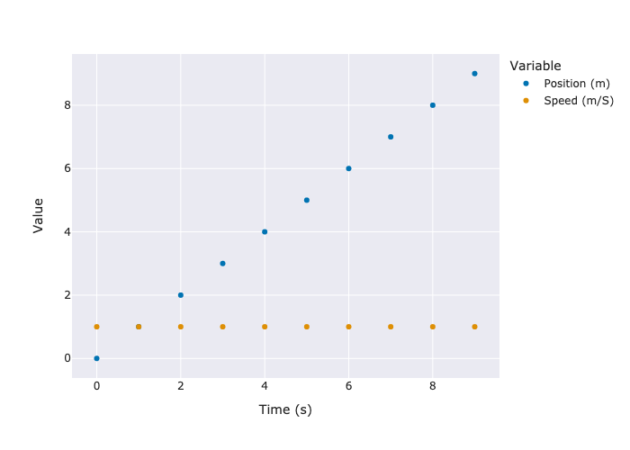
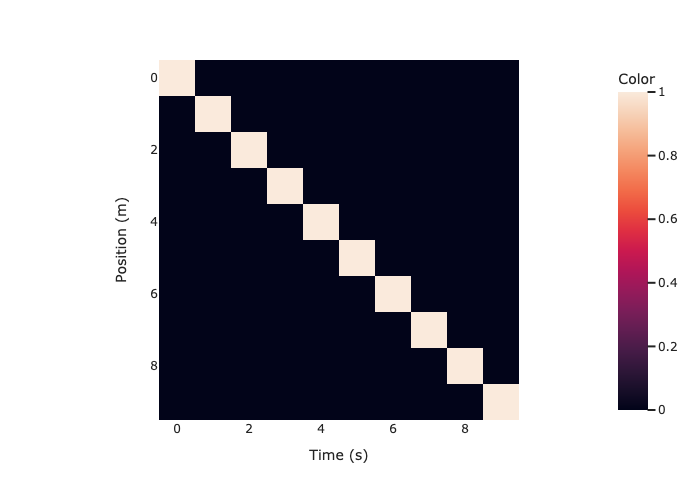
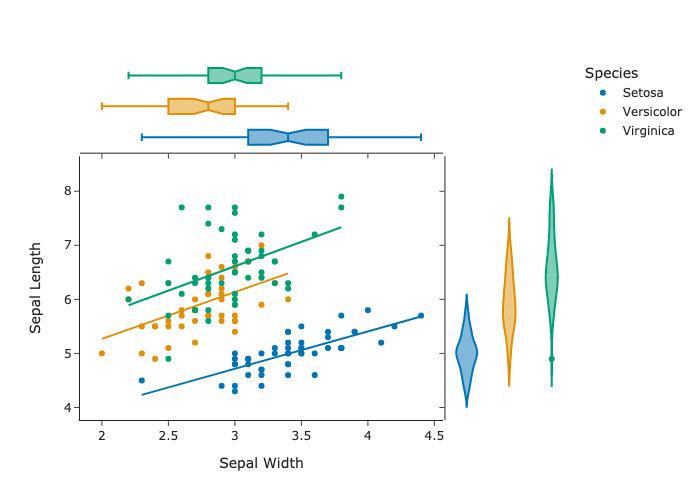
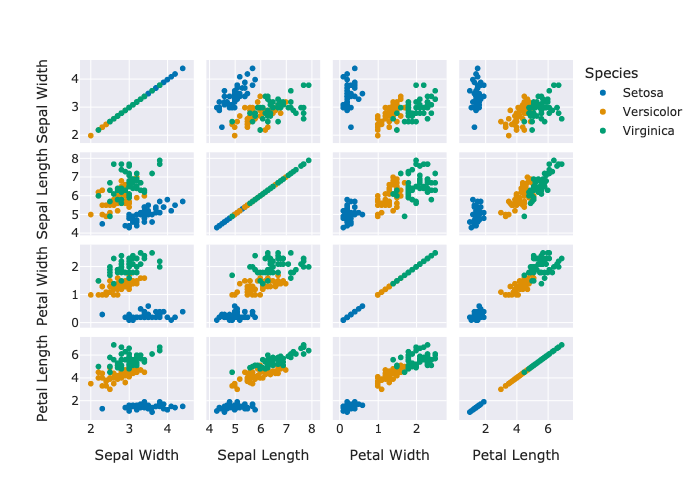
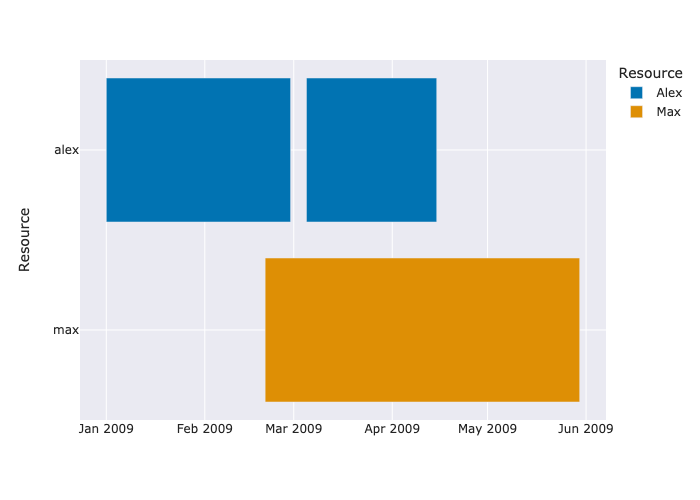
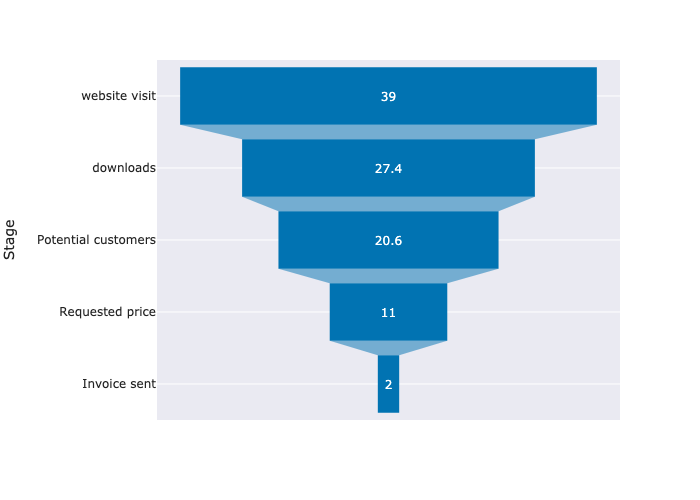
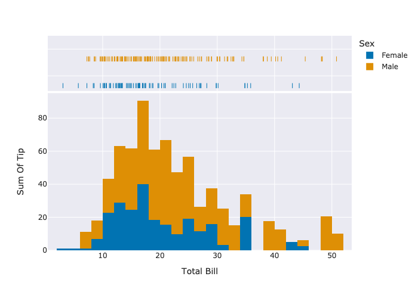
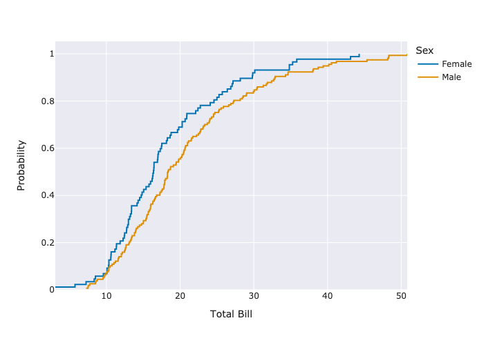
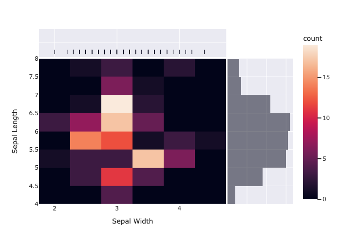

import plotly.express as px
from pdpatch.express import pxexpress
A drop-in replacement for
plotly.express that renames all labels from snake_case to Words.
set_template
Sets plotly default template and updates its own doc string so you can always see your default template and options.
/opt/hostedtoolcache/Python/3.9.16/x64/lib/python3.9/site-packages/fastcore/docscrape.py:225: UserWarning: Unknown section Templates Configuration
else: warn(msg)set_template
set_template (template_name)
set_template('plotly')
test_eq(set_template.__doc__,
"Templates configuration\n-----------------------\n Default template: 'plotly'\n Available templates:\n ['ggplot2', 'seaborn', 'simple_white', 'plotly',\n 'plotly_white', 'plotly_dark', 'presentation', 'xgridoff',\n 'ygridoff', 'gridon', 'none']\n")set_template('seaborn')
test_eq(set_template.__doc__,
"Templates configuration\n-----------------------\n Default template: 'seaborn'\n Available templates:\n ['ggplot2', 'seaborn', 'simple_white', 'plotly',\n 'plotly_white', 'plotly_dark', 'presentation', 'xgridoff',\n 'ygridoff', 'gridon', 'none']\n")Fix seaborn template
The seaborn template sets the default line width to 0, making the invisible when using add_vline or add_hline methods. It also sets opacity to 0.5. We fix this by popping this keys and values from the seaborn template layout.
df = pd.DataFrame({'time_foo_bar_xyz__s__': range(10), 'position__m__': range(10), 'speed__m/s__': 10*[1]})
fig = express.scatter(range(10), range(10))
fig.add_hline(4)
fig.add_vline(4)Unable to display output for mime type(s): application/vnd.plotly.v1+jsondf = pd.DataFrame({'time_foo_bar_xyz__s__': range(10), 'position__m__': range(10), 'speed__m/s__': 10*[1]})
fig = express.scatter(range(10), range(10))
fig.add_hline(4)
fig.add_vline(4)Unable to display output for mime type(s): application/vnd.plotly.v1+jsonDefault to colorblind palette
Rename snake_case to Words
update_legend_and_yaxis
update_legend_and_yaxis (fun)
Express
Express ()
Like plotly.express but defaults to labels=px_labeler
acronyms.append('XYZ')df = pd.DataFrame({'time_foo_bar_xyz__s__': range(10), 'position__m__': range(10), 'speed__m/s__': 10*[1]})
px.scatter(df, x='time_foo_bar_xyz__s__', y='position__m__').show()Unable to display output for mime type(s): application/vnd.plotly.v1+jsondf = pd.DataFrame({'time__s__': range(10), 'position__m__': range(10), 'speed__m/s__': 10*[1]})
fig = px.scatter(df,x='time__s__', y=['position__m__', 'speed__m/s__'])
fig.show(renderer="png")
df = pd.DataFrame({'time__s__': range(10), 'position__m__': range(10), 'speed__m/s__': 10*[1]})
px.imshow(df.crosstab(index='position__m__', column='time__s__')).show('png')
df = px.data.iris()
fig = px.scatter(df, x="sepal_width", y="sepal_length", color="species", marginal_y="violin",
marginal_x="box", trendline="ols", template="simple_white")
fig.show('png')
df = px.data.iris()
fig = px.scatter_matrix(df, dimensions=["sepal_width", "sepal_length", "petal_width", "petal_length"], color="species")
fig.show('png')
df = pd.DataFrame([
dict(task="Job A", start='2009-01-01', finish='2009-02-28', resource="alex"),
dict(task="Job B", start='2009-03-05', finish='2009-04-15', resource="alex"),
dict(task="Job C", start='2009-02-20', finish='2009-05-30', resource="max")
])
fig = px.timeline(df, x_start="start", x_end="finish", y="resource", color="resource")
fig.show('png')
data = dict(
number=[39, 27.4, 20.6, 11, 2],
stage=["website visit", "downloads", "Potential customers", "Requested price", "Invoice sent"])
fig = px.funnel(data, x='number', y='stage')
fig.show('png')
df = px.data.tips()
fig = px.histogram(df, x="total_bill", y="tip", color="sex", marginal="rug", hover_data=df.columns)
fig.show('png')
df = px.data.tips()
fig = px.ecdf(df, x="total_bill", color="sex")
fig.show('png')
df = px.data.iris()
fig = px.density_heatmap(df, x="sepal_width", y="sepal_length", marginal_x="rug", marginal_y="histogram")
fig.show('png')
Altair like __add__ method
df = pd.DataFrame({'time__s__': range(10), 'position__m__': [i**1.3 for i in range(10)], 'speed__m/s__': 10*[1]})
fig = px.scatter(df,x='time__s__', y=['position__m__', 'speed__m/s__'])
fig+px.scatter(df,x='time__s__', y='time__s__')Unable to display output for mime type(s): application/vnd.plotly.v1+json# fig1 / fig2px.scatter(df,x='time__s__', y='position__m__')+px.scatter(df,x='time__s__', y='speed__m/s__')Unable to display output for mime type(s): application/vnd.plotly.v1+jsonfig = px.scatter(df,x='time__s__', y='time__s__') + px.scatter(df,x='time__s__', y=['position__m__', 'speed__m/s__'])
figUnable to display output for mime type(s): application/vnd.plotly.v1+jsonfig = px.scatter(df,x='time__s__', y='time__s__') | px.scatter(df,x='time__s__', y=['position__m__', 'speed__m/s__'])
figUnable to display output for mime type(s): application/vnd.plotly.v1+jsonfig = px.scatter(df,x='time__s__', y='time__s__') / px.scatter(df,x='time__s__', y=['position__m__', 'speed__m/s__'])
figUnable to display output for mime type(s): application/vnd.plotly.v1+jsonfig = px.scatter(df,x='time__s__', y='time__s__') / px.scatter(df,x='time__s__', y=['position__m__', 'speed__m/s__'])
fig | figUnable to display output for mime type(s): application/vnd.plotly.v1+json